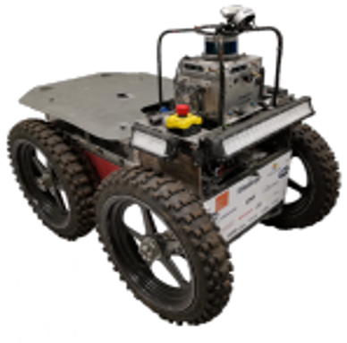
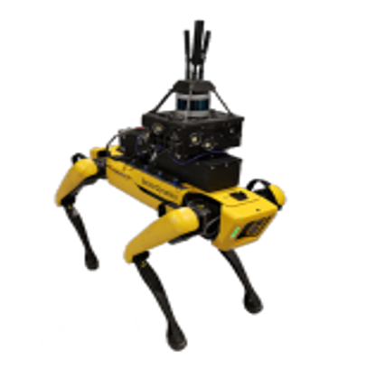
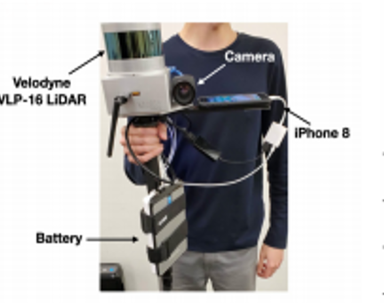
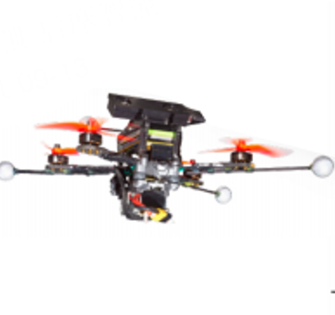

Robust odometry is essential for autonomous systems operating in complex and dynamic environments. Existing odometry systems often struggle with severe sensory degradations and extreme conditions such as smoke, sandstorms, snow, or low light, compromising both safety and functionality. To address these challenges, we present Super Odometry, a sensor fusion framework that dynamically adapts to varying levels of environmental degradation.
Organized hierarchically from lower-level to higher-level adaptability, the framework integrates four modules: feature selection, state direction selection, engine selection, and a novel data-driven inertial odometry. The inertial odometry, trained on over 100 hours of heterogeneous robotic platforms, captures comprehensive motion dynamics, providing a reliable fallback when exteroceptive sensors fail. Notably, Super Odometry elevates inertial measurement unit (IMU) to the same significance as camera and LiDAR within our sensor fusion framework, enabling independent inertial odometry to overcome extreme environments.
Super Odometry has been rigorously validated across 200 kilometers and 800 operational hours on a fleet of aerial, wheeled, and legged robots, under diverse sensor configurations, environmental conditions, and motion profiles. This work represents a significant advancement toward safe, autonomous navigation in all-degraded environments.
Our IMU pre-trained model trained from large datasets and generalized across various robotics Platforms. Qualitative pose comparison shows our method (last column) achieves the highest accuracy against Ground Truth.
Detailed single trajectory comparision. Better to view each video in full screen.
| Car Expert Model (AI-IMU) | Dog Expert Model (RNIN-VIO) | Human Expert Model (TLIO) | Drone Expert Model (IMO) | IMU Pretrain Model (Our) | |
|---|---|---|---|---|---|
|  | |||||
|  | |||||
|  | |||||
|  |
Our learning-based IMU odometry an perform an online adaptation scheme, enabling it to adjust to novel environments continuously in a self-supervised manner with real-time refinement. To the best of our knowledge, this is the first IMU-based estimator that demonstrates such a high level of generalization across diverse robot platforms, fast adaptation to unseen environments, and real-time predictions with minimal drift.
@article{zhao2024Hero,
author = {Shibo Zhao, Sifan Zhou, Yuchen Zhang, Ji Zhang, Chen Wang, Wenshan Wang and Sebastian Scherer},
title = {Hierarchical Adaptation Enables Robust Odometry Towards All-degraded Environments},
year = {2024},
}